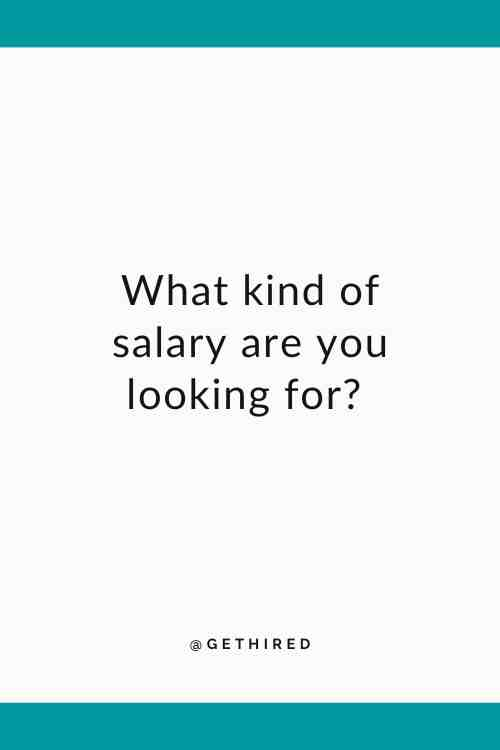
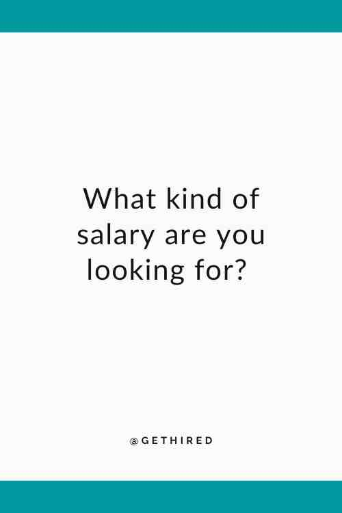

Interview Guide
In this page, you’ll learn how to answer 12 most common interview questions. Believe it or not, even though there is a lot of questions out there, they are often connected to these 12 questions. This means understanding these 12 questions will help you better prepare for any question out there.
1. Tell me/us a little about yourself.
What employer is often assessing:
• What you could bring to the job table, or what value you would bring to their company or organization
• Your vision/passion for their company and/or this position
• How well you understand and resonate with their bottom line and how you intend to contribute to it
Things to avoid:
• Don’t give a life history, travel log, or share irrelevant or inappropriate personal information
• Don’t offer answers to questions that are illegal for them to ask (i.e., age, marital/family status,
ethnicity, gender orientation, hidden disabilities, etc.)
Things to do/say:
• Articulate how your work experience, education, strengths, vision, skills, and/or intended contributions will
meet the top needs of the company for this position. One way you could do this is to make a
relevant claim and back it up w/a powerful example
• Keep it to 30-60 seconds, unless they specify a specific amount of time that you should take
• Typically include personal info only as it is relevant to the job

2. Why do you want to work for our company/organization?
What the employer is often assessing:
• Do you really want to work for their company and in this specific position? Or are you just looking for any job that you can get?
• Have you taken the time to research their company?
• Have you assessed how well you would fit in, and the specific and/or unique value that you could bring to the organization?
Things to avoid:
Avoid Me-Centered Answers:
• “I need a job to pay for school”
• “I need to get experience”
• “You seem like you’d be a good company to work for”
• “I want to work for an industry leader” (without including your intended contributions)
• “I would learn a lot from this job”
• “I would have fun here”
Things to do/say:
• Show them you’ve done your research and that you are here to meet their needs by saying something like…
(only if it is true, of course)
• “I know that you value ________, and that is exactly in line with what I want to do in my career.
I have experience in _______ and feel I could make a significant contribution to your company’s efforts in this area.”
• “I thrive in organizations that value and invest in _______. For example, in my past work experiences
I was able to _________. These are the kinds of contributions I would like to make with your company.”
3. What appealed to you about this position?
What the employer is often assessing:
• Are you serious about this job? Are you motivated by the right things? Are you self-centered or contribution-centered?
Things to avoid:
• Avoid me-centered, vague answers that do not show your knowledge of the position/company
Things to do/say:
• Discuss the unique contributions that you intend to make—in the context of what appeals to you—that are relevant
to this position and the audience’s top priorities.

4. Where do you see yourself in 5-10 years?
What the employer is often assessing:
What are your longevity intentions? How seriously are you taking this position?
Do you just see this as a holdover job?
Will this job help you progress toward your career aspirations?
Do not give unrealistic, naïve or vague answers
Things to avoid:
Do not talk about your family plans. (Answer with the assumption that you will be working for the next 5-10 years.)
Things to do/say:
Show the company how this job would enable you to meet their needs as well as your current job/career aspirations
Show them how it ties in with your long-term goals while contributing to the fulfillment of their goals and mission
5. What is your greatest strength? What would your coworkers say is your greatest strength? What do other people like about you?
What the employer is often assessing:
Fit
• Are your strengths a good fit for this job? (Is your top strength what they need the most?
Will it help take them in the direction they are trying to go? Or do they already have enough of it and need something else?)
• Will you fit in with their company and department culture?
Self-Awareness
Things to avoid:
• Starting a strength without giving an example and result
• Giving a low-level strength or example when you could give high-level ones
• Not showing how your strength is relevant to and will benefit them
Things to do/say:
Before the Interview:
• Do your research on what is most important to the company and assess how you are uniquely qualified to meet their needs
During the Interview:
• Explain your strength in ‘power statement’ form (claim, example, result)
• Articulate how your greatest strength can meet their top needs

6. What is your weakness? What would your current co-workers say is your greatest weakness? What do other people not like about you?
What the employer is often assessing:
• Red Flags
• Self-awareness
• Cultural fit
• Ability to successfully handle specific challenges you might face in this position
Things to avoid:
• Do not berate or criticize yourself
• Do not beat around the bush or give a vague or flowery answer that doesn’t really answer the question
• Do not lie or stretch the truth
• Do not give cliché answer or try to disguise a weakness as a strength. Example:
"I’m a perfectionist"
"I work too hard."
"I care too much."
"I can be too invested in my job."
Things to do/say:
• One way to help alleviate the anxiety that this question can trigger is to help students
see that employers are not expecting them to be flawless. They know that all employees
have weaknesses. (All weaknesses are side effects of strengths and vice versa.)
• Be honest about your weaknesses, while still sharing the whole picture with the employer. Example:
“The side effects of my ability to see the details and exceed customer expectations
are that I might take longer to complete a project and I’ve often been hesitant to delegate
my work. I’ve realized that this has made it difficult for me to have balance in my
life and has also caused me to miss out on the strengths and insights that my
colleagues could contribute if I had delegated. I have spent the last several months making
conscious efforts to create systematic ways to delegate effectively and obtain valuable input from my colleagues.
I still have room for growth in this area but delegating and collaborating have helped me to simplify and
have lightened my load, decreased turnaround time on projects, and increased the quality
of services.”
7. Behavior-based questions
Tell me about a time when…
• You had a conflict with a co-worker/supervisor?
• You had a conflict with a customer?
• You worked well under pressure?
• You missed a deadline?
• You were creative in solving a problem?
What the employer is often assessing:
The company is assuming that past behavior is the best predictor of future behavior and wants to see how you will likely perform in certain situations.
Many employers will assume that you will eventually view them the same way you viewed past employers, co-workers, etc.
• Red flags
• Self-awareness
• Ability to successfully handle the topic-specific challenges that the candidate would face in this position
• Cultural fit
• Attitudes about people (Do you blame others? Do you take responsibility and own your stuff?)
• Your understanding of, experiences with, and roles in the specific topic, etc. Example:
"How do you view conflict? Are you conflict averse? Do you see conflict as something that can lead to improvements in the workplace, etc.?"
"Can you handle conflict effectively?"
"Can you make good judgment calls under pressure?"
"What role do you play in workplace conflict?"
Things to avoid:
• Giving vague answers that don’t show the significance or relevance of the story, or don’t illustrate your role and the impact you
have had in organizations, will often leave the issue unresolved in the minds of the interviewer(s)
• Giving too much information or irrelevant details
• Blaming or criticizing others involved in the scenario
• Providing an example of you at your worst
• Providing an example of you performing at a very low level of the skill/topic they are assessing
Ex: Giving a very basic example of conflict when you have a more relevant, appealing,
and/or high-level scenario that you could share
Things to do/say:
• Give specific answers that show the significance or relevance of the story,
illustrate your role and the impact you had, and that show the positive results
• Be concise (review examples before the interview so they are fresh in your
mind and have already been filtered for conciseness)
• Focus more on the resolution and how it was resolved more than the problem
General life and career advice:
Learn to view conflicts with others as a result of one or more person’s needs not being met,
rather than focusing on whose fault it is. (The book, Leadership & Self-Deception by Arbinger,
is a great book for teaching someone how to do this).

On a scale from 1 to 10, how would you rate yourself when it comes to…?
• Working well under pressure?
• Resolving conflicts in productive ways?
• Managing your time?
• Being well organized?
• Communicating well with others?
What the employer is often assessing:
This is another way that companies and organizations assess past behavior in order to
predict future behavior. The guidelines for answering “tell me about a time when…”
questions are applicable here as well.
Things to avoid:
• Do not lie or exaggerate, but do not sell yourself short either
• Do not give yourself a high number and back it up with a weak example
Things to do/say:
• It is a good idea to review the areas in which you are weak and think of times when you have been strong in these areas.
Have these examples fresh in your head so that you can offer a positive example to the employer
• Be able to back up whatever number you list off with one or more examples
In your opinion, what makes a successful (or an effective) ______________?
(Name a position or something pertinent to the position like customer service provider,
teacher, leader, accountant, manager, salesman, social worker, etc.)
What the employer is often assessing:
The company may want to see if your opinion/way of thinking matches with their values/ways of doing business.
This could also be a way for them to assess how much you have thought about an issue(s)
you would be confronted with in this field.
Things to avoid:
• Do not answer in a way that belittles or criticizes anyone else.
Tell what it is, NOT what is isn’t. Do not say something like:
“A good leader doesn’t demoralize or act hypocritically.
I once had a boss who [insert all of the bad things s/he did] …”
Things to do/say:
• This is another time to prove you have done your research on the company’s
priorities and the position. In a non-self-centered fashion, relate yourself
and your skills to this question.
• Answer in positives, not negatives
• This is a ponder question. Think about this ahead of time. And make sure to
share with them your honest/sincere answer on what makes a good sales person,
teacher, manager, accountant, etc.
 

10. What kind of salary are you looking for?
*Exception: If no salary has been posted, you have reason to believe that this position
may not pay what you need, and the interview process may take a substantial amount of time
and money on your part or the company’s part, you may want to discuss generalities sooner. You could say something like:
“I am highly interested in interviewing with you.
To make the best use of everyone’s time and resources,
could you tell me at what point in your process
the salary and benefit information will be made available?”
“Thank you for the invitation. Could I find out some more information
about the salary and compensation plan so that I can come prepared to discuss this with you?”
What the employer is often assessing:
• Are you affordable? (They want to hire the best talent for the lowest price)
Things to avoid:
• Asking about salary before they bring it up or before an offer is made*
• Not researching marketable wages for this type of job/industry/ company
• Giving a specific amount (If you go too high you may be screened out. If you go too low, you may leave money on the table.)
• Saying things like: “I just want the experience. I don’t really care about the pay” or “I just need enough to provide for my family.”
Phrases like this could cost you thousands of dollars and can start a ‘take advantage of me’ pattern with you and this company.
Things to do/say:
• Know what you are worth. Research marketable wages for this type of job/industry/company before the interview.
Use sites like glassdoor.com and payscale.com. LinkedIn also has a salary feature.
• Whenever possible and feasible*, avoid talking details until you have been offered the job.
• Say things like:
“That is negotiable, and I am confident it is within the range you have posted.”
“That is negotiable, and I am willing to entertain any reasonable offer.”
“I am willing to entertain any reasonable offer. If you decide to hire me,
I can give you a more detailed answer once we have had the chance to discuss
what you typically pay someone with my qualifications for a position like this.”
11. Why should we hire you over other applicants?
What the employer is often assessing:
• How seriously are you taking this position?
• Self-knowledge (how you can uniquely contribute)
• They want you to convince them that you are exactly what they need
Things to avoid:
• Do not give vague answers that do not show your knowledge of what is needed or how you can contribute
Things to do/say:
• Answering this question in a powerful way requires you to thoroughly understand what is required and what you have to offer
• Know every detail about this job that you can find
• Visualize yourself in all facts of this job. As you do this, the ideas will come.
• Show them how you can meet their specific bottom line. Example:
“Although I do not know the other candidates applying for this position,
I can tell you how I plan to exceed your expectations [or the unique
contributions I intend to make]. Then explain.”
“I know that a colleague of mine has applied and that s/he has global experience in _______.
But I have _________, which is highly pertinent to the goals you have mentioned for this coming year.
And I believe I can accomplish these things in a shorter timeframe with less resources.”

12. Do you have any questions for me?
What the employer is often assessing:
The employer wants to help candidates more fully understand the company and what the position entails.
Although the purpose is to inform the candidate, employers may also use this as a chance to assess:
• How much research the candidate has done
• How much the candidate has visualized themselves in the position and assessed the contributions they can make
• If the candidate is “me-centered” or “contribution-centered”
Things to avoid:
• Do not say “No” or “I don’t have any questions”
• Do not ask questions that can be easily answered through research
• Do no ask questions in ‘me-centered’ ways or in ways that provoke concerns in the interviewer(s):
"How much does this job pay?"
"How often will I get pay raises?"
"How long before I will be able to take vacation time?"
"What is hard about this job?"
"What don’t you like about your job?"
"Do you have a high turnover rate with your employees?"
Things to do/say:
• Bring five or more thoughtful questions to ask about the position and/or the company.
These questions should reflect the depth of audience-specific knowledge,
the kind of employee you tend to be, and/or the kinds of contributions you intend to make.
Examples:
“Exceeding your expectations is important to me. If you were to hire me, can you tell me how the onboarding, training, and evaluation processes work?”
“Exceeding your expectations is important to me. Can you tell me how success* is measured in this position, department, and by the company as a whole?”
“What are some of the toughest challenges you would need me to tackle if you were to hire me of this position?”
“In a recent article I read about [name of company], I noticed _______________. Can you tell me ____________?
*Or use wording that gets at company’s bottom line